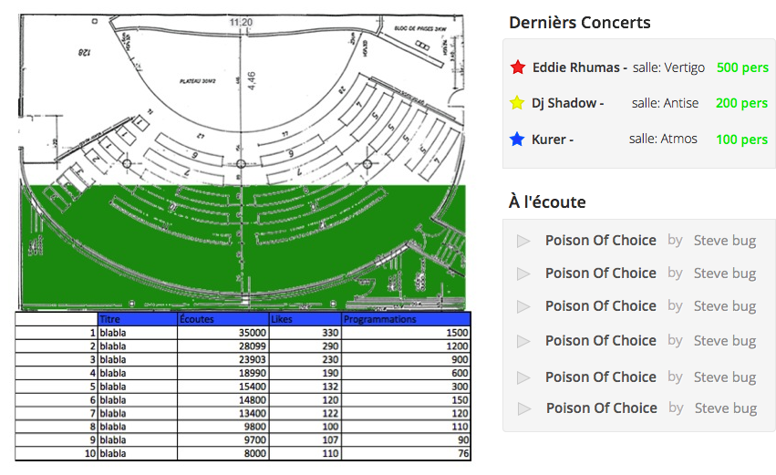

Artiste, trouve ton public !
Marre de ne pas savoir qui t'écoutes, marre de ne pas savoir combien de personnes vont venir à ton prochain concert.
Zikube est le premier système de musique te permettant de savoir qui va venir à ton prochain concert.
Retrouve dans ton espace perso, les infos sur tes chansons les plus écoutées, lesquelles ont été joué par d'autres djs et connait en temps réel le taux de remplissage de la salle de ton prochain concert